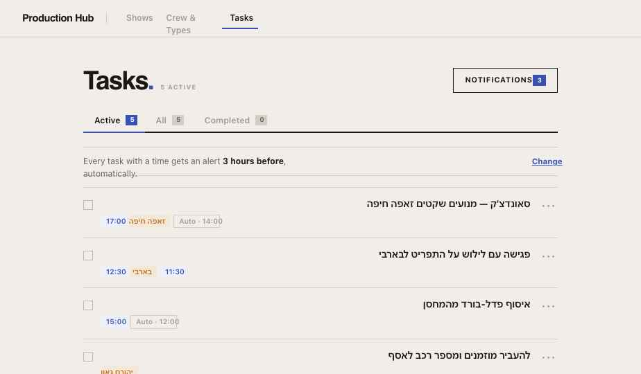
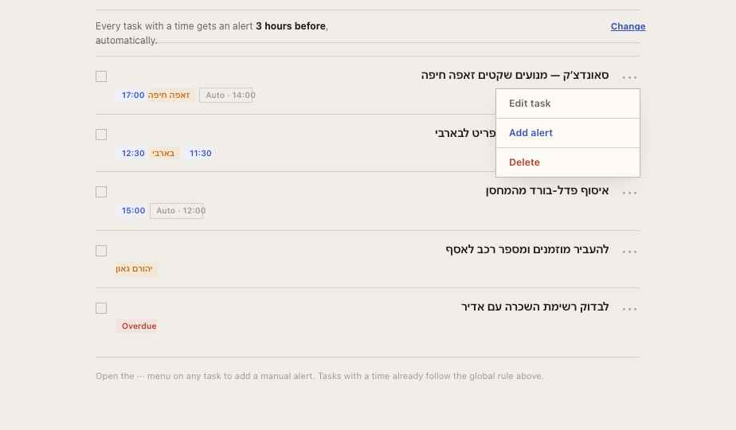
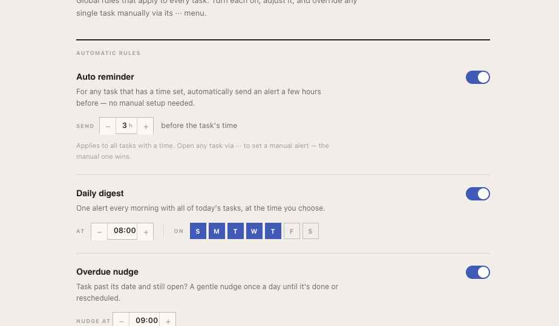
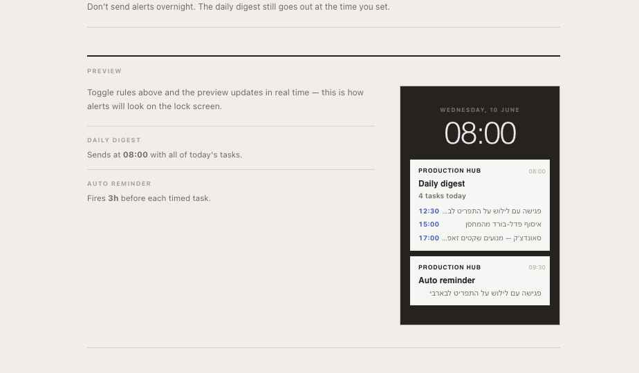
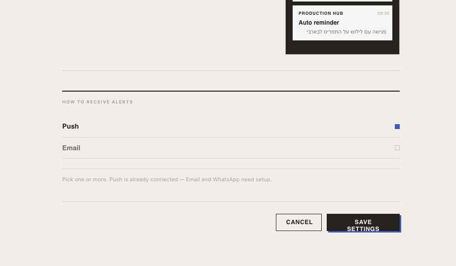

A global notification settings screen, reachable from within the Tasks tab. Covers five configurable rules, per-task manual alerts, and a push/email channel selector. This document contains full visual specs, state model, API requirements, and integration notes.
All designs live in task-notifications/Task Notifications v5.html — fully interactive, click Notifications to enter settings.





Top-right of the Tasks header: NOTIFICATIONS button (ghost, ink border). A blue badge shows the count of active alerts. Clicking sets screen = 'settings'. No modal — full-page swap within the Tasks route.
Five toggle-rows with optional sub-controls. Each row: title (Bricolage, 0.95rem), description (Assistant, 0.8rem), toggle right. Sub-controls only visible when ON. Back link at top returns to tasks.
Every task row has a ··· button. Opens a dropdown: Edit task / Add alert (blue) / Delete (red). If a manual alert already exists: Edit alert / Remove alert. Add/Edit opens an inline time picker.
If task has a time: four relative chips (1h / 3h / 5h / Day before) with computed fire-time shown. If no time: stepper to pick an absolute time. Manual alert stored on the task and overrides the global auto-reminder rule.
#F1EEE9 — warm cream#FDFAF5 — notification cards, dropdowns#1A1714 — headings, active labels#6B6259 — body descriptions#A39A91 — captions, helper text, caps labels#3852B4 — toggles ON, active pills, Save button shadow#D4CEC6 — section dividers, table rows2px solid var(--ink) — Row dividers: 1px solid var(--rule)3px 3px 0 #3852B4 (editorial offset)A single notificationSettings object stored per-user (persist to /api/notification-settings).
{
autoTimed: {
on: true,
offset: 3 // hours before task time (1–12)
},
digest: {
on: true,
time: "08:00", // HH:MM, 30-min increments
days: [0,1,2,3,4] // 0=Sun … 6=Sat; default Sun–Thu
},
overdue: {
on: true,
time: "09:00" // daily nudge fire time
},
assigned: {
on: true // no sub-config needed
},
quiet: {
on: false,
from: "22:00",
to: "07:00"
},
channels: {
push: true,
email: false
}
}
Stored on the task object. Overrides autoTimed for that task.
// On a task:
reminder: null
// or
reminder: { type: "rel", offset: 1 } // 1h before task.time
reminder: { type: "rel", offset: 3 } // 3h before task.time
reminder: { type: "abs", at: "09:00" } // absolute time (tasks with no time)
| Rule | Trigger | Sub-controls | Override? |
|---|---|---|---|
| Auto reminder | Any task with a time — fires N hours before | Offset stepper (1–12h) | Yes — per-task reminder wins |
| Daily digest | Every selected day at chosen time | Time stepper + day chips (S M T W T F S) | No per-task override |
| Overdue nudge | Any task past dueDate, still incomplete — fires once/day | Time stepper (nudge time) | No per-task override |
| Assigned to me | Immediate — when a task is assigned via team | None | No per-task override |
| Quiet hours | Suppresses all alerts between from and to | From + To time steppers | Daily digest respects it |
| Endpoint | Method | Description |
|---|---|---|
/api/notification-settings |
GET | Load user's current notification settings object |
/api/notification-settings |
PUT | Save full settings object on "Save settings" click |
/api/tasks/:id |
PUT | Already exists — extend to persist reminder field |
/api/automations/push/test |
POST | Already exists — reuse for push delivery |
/api/notifications/digest |
POST (cron) | New — scheduled job: compile today's tasks + fire push/email |
/api/notifications/reminders |
POST (cron) | New — runs every 15 min: check task times, fire auto-reminder or manual alerts |
/api/notifications/overdue |
POST (cron) | New — daily: find overdue open tasks, send nudge at configured time |
// inside GlobalTaskPanel
const [screen, setScreen] = useState('tasks'); // 'tasks' | 'settings'
const [notifSettings, setNotifSettings] = useState(null);
// load on mount
useEffect(() => {
fetch('/api/notification-settings')
.then(r => r.json())
.then(setNotifSettings);
}, []);
return (
<div className="gtask-page">
{screen === 'settings'
? <NotificationSettingsScreen
settings={notifSettings}
onSave={async (s) => {
await fetch('/api/notification-settings', {
method: 'PUT',
headers: { 'Content-Type': 'application/json' },
body: JSON.stringify(s),
});
setNotifSettings(s);
setScreen('tasks');
}}
onBack={() => setScreen('tasks')}
/>
: <>
{/* existing header + form */}
<NotificationsEntryButton
count={armedCount}
onClick={() => setScreen('settings')}
/>
{/* existing filter bar, task list */}
</>
}
</div>
);
// in updateTask:
const res = await fetch(`/api/tasks/${id}${artistQS()}`, {
method: 'PUT',
headers: { 'Content-Type': 'application/json' },
body: JSON.stringify({
...data,
reminder: data.reminder ?? null, // ← add this
}),
});
When notifSettings.autoTimed.on and task has a time and no manual reminder, render a subtle pill:
// in task row render:
const autoFire = notifSettings?.autoTimed?.on && task.time && !task.reminder
? formatTime(toMin(task.time) - notifSettings.autoTimed.offset * 60)
: null;
{autoFire && (
<span className="gtask-pill" style={{ background:'var(--surface-sunk)', color:'var(--text-2)' }}>
Auto · {autoFire}
</span>
)}
Push infrastructure already exists (subscribeToPush, /api/automations/push/test). The new cron jobs consume the same subscription table.
// pseudo-code
for each user with autoTimed.on or tasks with manual reminders:
for each open task with a time:
fireAt = task.time - (task.reminder?.offset ?? settings.autoTimed.offset) hours
if now is within current 15-min window of fireAt:
if not already_sent(userId, taskId, date):
sendPush(userId, { title: "Task reminder", body: task.text })
markSent(userId, taskId, date)
// pseudo-code
for each user with digest.on and today in digest.days:
if user's local time matches digest.time (±7.5 min):
todayTasks = tasks where dueDate = today OR (timed AND date = today)
sendPush(userId, {
title: "Daily digest",
body: `${todayTasks.length} tasks today`,
data: { tasks: todayTasks.map(t => ({ text: t.text, time: t.time })) }
})
| File | Description |
|---|---|
Task Notifications v5.html | Final interactive design — open this to click through all states |
handoff/01-tasks.png | Tasks screen: NOTIFICATIONS button + auto-rule strip |
handoff/02-task-menu.png | Task ··· menu with Add alert option |
handoff/01-03-settings-top.png | Settings screen — rules section |
handoff/04-phone-preview.png | Phone lock-screen preview (digest + auto reminder cards) |
handoff/05-channels.png | Channels + SAVE SETTINGS button |
Production Hub · Notification Settings · Design handoff · June 2026